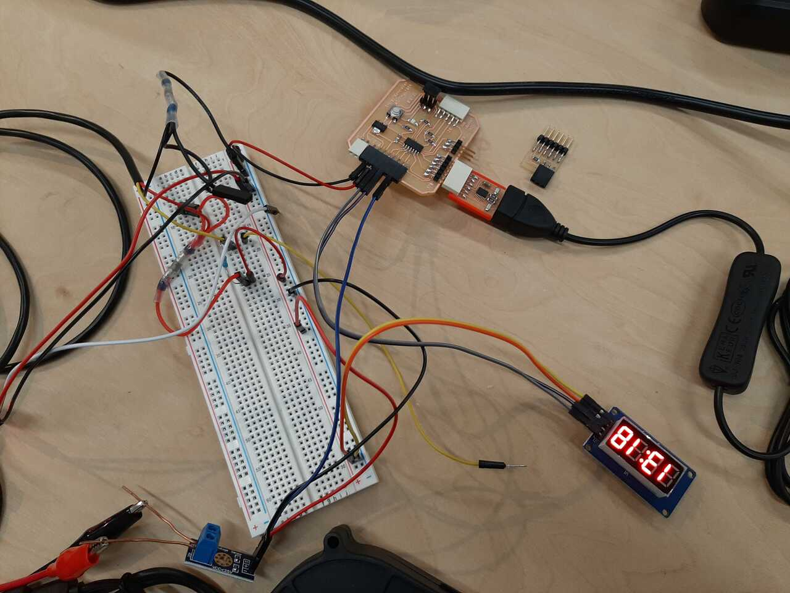

The assignment for this week was to learn about output devices. For my final project, I will need to measure and output the current, voltage, and temperature onto LED displays and an LED bargraph. Therefore, I elected to learn how to use and program these output devices this week. The assignment overview and learning outcomes are shared below.
Group assignment:
The tasks for the group assignment are as follows.
- Measure the power consumption of an output device
- Document your work (in a group or individually)
Individual assignment:
The tasks for the individual assignment are as follows.
- Add an output device to a microcontroller board you’ve designed and program it to do something
Learning outcomes:
- Demonstrate workflows used in controlling an output device(s) with MCU board you have designed
- Link to the group assignment page
- Document how you determined power consumption of an output device with your group
- Document what you learned from interfacing output device(s) to microcontroller and controlling the device(s)
- Describe your design and fabrication process or linked to previous examples.
- Explain the programming process/es you used.
- Outline problems and how you fixed them
- Include original design files and code
- Include a ‘hero shot/video’ of your board
Group Assignment
For the group assignment it was necessary to measure the power consumption of an output device. To do this we need to measure the current and voltage of the output device. We chose to measure the power consumption of the LED bargraph.
To measure power, it is necessary to measure the current and voltage. We chose to do this with a multimeter as shown in the image below:
To measure the power using an oscilloscope it is necessary to set up a voltage measurement on one channel and the voltage drop across a shunt resistor on a different channel. A good tutorial on how to use an oscilloscope to measure power consumption can be found at this link here.
Some of the work presented in that article is presented below:
Oscilloscope Setup
Let’s take a look at how we might configure our oscilloscope to measure current. At first glance, our original schematic (Figure 2) might look like it would work well. Using the resistor on the positive rail is known as a high-side shunt resistor. There is a slight problem with that, however: the ground clip on most desktop oscilloscopes is directly connected to earth ground!
If we are working with a circuit that is grounded and a desktop oscilloscope (that is also properly grounded), then connecting the ground clip to either side of Rsh would result in a short. Not good.
One option is to move the resistor to the return path (known as a low-side shunt resistor) and connect the oscilloscope’s ground clip to the circuit’s ground.
You will not have to worry about shorting out your power supply with this setup. However, you introduce a new problem: a ground loop. Current can circulate around the ground loop (from earth ground, through our circuit under test, through the oscilloscope ground clip, back to ground through the oscilloscope).
Ground loops can cause unwanted interference or noise to appear on your measurements or in your circuit. This article does a great job at explaining ground loops. Note that this is only a real problem if both your oscilloscope and circuit under test are both connected to earth ground, as shown in figure 4.
If your oscilloscope or device under test is battery-powered or isolated from earth ground, you do not need to worry about this issue. However, to be extra safe, the best way to measure the voltage drop across a shunt resistor is to use a two-probe setup configured as a differential pair.
Differential Probe Setup
You will need 2 channels on your oscilloscope to perform this measurement. Most oscilloscopes have their ground clips connected together (you can confirm this with a multimeter if you are unsure). As a result, we do not need to connect the ground clips to anything.
Connect your probe tips to either side of the shunt resistor. For this example, we assume that channel 1 is at a higher potential than channel 2. While Figure 5 shows a low-side shunt resistor, note that you can do this with a high-side resistor as well.
On your oscilloscope, select the Math function (assuming your oscilloscope has such a function). From there, you should be able to plot the output of Ch 1 - Ch 2. By subtracting the channel 2 voltage from the channel 1 voltage, we can compute the voltage drop across the resistor without worrying about shorting our power supply or creating a ground loop!
Remember that for every point on this waveform, you will need to divide the voltage by the value of the shunt resistor to get the current flowing into your system. Some oscilloscopes allow you to divide the measured value by a constant to save you from needing to perform this step. Check the Math functions in your oscilloscope!
Unfortunately, we did not have a chance to complete the power consumption measurement using an oscilloscope.
Individual Assignment
For the individual assignment we were tasked with adding an output device to a microcontroller board that we have designed and programming it. To do this I intend to use the Adrianino that I created in assignment 7. Electronics design and use jumpers to the pinouts of the analog and digital pins. For the final project I will properly design and integrate these sensors into my PCB. The workflow used to perform the tasks in this assignment are discussed in the following section.
Workflow
- Determine the technical specifications of output devices
- Connect your output devices to your microcontroller board
- Program your microcontroller to output to your device
- Test your program
- Debug and adjust as necessary
1. Determine specifications of sensors
The first step is to look at the documentation of the output devices and determine their specifications and how to connect them to your microchip. Below is an overview of the output devices
LED display
For this project we used the TM1637 LED display. It is a 4-digit 7-segment LED display has 12 pins. 8 of the pins are for the 8 LEDs on a 7 segment display, which includes A-G and DP (decimal point). The other 4 pins represent each of the 4 digits from D1-D4.
Specifications:
- Driver IC: TM1637
- Size: 30mm x 14mm
- Display Color: Red
- Connection to an Arduino UNO:
VCC to Arduino 5v GND to Arduino GND CLK to Arduino digital pin, your choice DIO to Arduino digital pin, your choice
The pinout of the display is shown in the image below:
There are two very good tutorials on how to wire and pin these displays at the following two links.
In order to use this board using Arduino IDE you will need to download the TM1637 library by Avishay Orpaz. It can also be found in the Arduino IDE Library manager.
Next is to determine the specifications of the led bar graph.
LED Bargraph
The LED bargraph is displayed using a NeoPixel Stick - 8 x 5050 RGB LED with Integrated Drivers. The strip consist of 8 tiny 5050 (5mm x 5mm) smart RGB LEDs onto a PCB with mounting holes and a chainable design. It uses only one microcontroller pin to control all 8 LEDS. Each LED is addressable as the driver chip is inside the LED. Each one has ~18mA constant current drive so the color will be very consistent even if the voltage varies, and no external choke resistors are required making the design slim. Power the whole thing with 5VDC (4-7V works) and you’re ready to rock.
Specifications:
- Datasheets, EagleCAD PCB files and Fritzing Library
- available in the NeoPixel tutorial
- Dimensions: 51.10mm / 2" x 10.22mm / 0.4" x 3.19mm / 0.12"
- Weight: 2.57g
- May ship with either WS2812B or SK6812-based LEDs. They are the same brightness, color and protocol
You can find the library to add to your Arduino IDE here
Now that we are familiar with our output devices, we will connect them to our board and program our microcontroller.
2. Connect your sensors to your microcontroller board
The next step in the workflow is to connect your sensors to your microcontroller board. The micro controller board is an AT-tiny-1614. The board has analog/digital pins at pins PA4, PA5, PA6, and PA7. These correspond to Arduino Adresses of 0, 1, 2, and 3 respectively. The image below illustrates the pinout.
The photo below shows the board and the 4 I/O digital analog pins available.


Due to a limitation of pins on my board (4 pins) I decided to program all of the sensors and output devices one an arduino first and then do another version with just one sensor (volt sensor) and one output device on my board.Below is a photo of the final wiring of all of the sensors connected to the Arduino:
For the Arduino the pinning was as follows:
- A0 - Current sensor output
- A1 - Voltage sensor output
- 2 - Temperature sensor output
- 3 - CLK of led display for current value
- 4 - DIO of led display for current value
- 5 - CLK of led display for voltage value
- 6 - DIO of led display for voltage value
- 7 - digital control pin of led bargraph
Below is a photo of photo of the volt sensor and one LED display using my AT-Tiny-1614 board.
With this configuration I used the following pinning:
- PA4/0 - CLK of LED display
- PA5/1 - DIO of LED display
- PA7/3 - Analog output of voltage sensor
Now that everything is wired it is time to program the microcontroller.
3. Program your microcontroller
To program my microcontroller I elected to use Arduino IDE. Both of my output devices required libraries to be added to my Arduino IDE in order to function, I will therefore discuss briefly how to add the libraries below. You can find a tutorial on the Arduino website here.
A) Install any necessary ZIP libraries using library manager
The first step is to download and extract the zip folders. You can download the zip folders that contain the libraries for each device using the following links:
Once downloaded, find your Arduino folder that contains your libraries and paste the zip files there. You can then use the Library manager under Sketch -> Include Library -> Add .Zip library in Arduino to upload them. You can find a tutorial on the Arduino website here.

once completed you can include them in your code by using the following headers
#include <library_name.h>
Note that all three of the zip folder libraries need to be installed but only the Robojax and Dallas temperature need to be included. Once completed you can write your code.
B) Write your code
The next step is to write your code, be sure to use any commands that have been added by including any libraries.
For the TM1376 LED displays the tutorial at this link was very useful.
For the Neopixel LED bar graph the GitHub page at this link had good explanations of the code.
The code for all of my sensors and output devices is here:
#include <Robojax_AllegroACS_Current_Sensor.h>
#include <DallasTemperature.h>
#include <OneWire.h>
#include <TM1637Display.h>
#include <Adafruit_NeoPixel.h>
#ifdef __AVR__
#include <avr/power.h>
#endif
//DECLARING CONSTANT VARIABLES AND PINS
const float Vratio = 5.128; //ratio of voltage reduction based on experiment
const float VCC = 5.04; // value of VCC of the board based on measurements
const int CurrentPin = A0; // pin where current sensor is conncected
const int VoltPin = A1; // pin where voltage sensor is connected
const int TempPin = 2; // pin where temperature sensor is connected
const int MODEL = 0; // value of the current sensor model, see below
const int CLKI = 3; // clock for current (I) readout LED display
const int DIOI = 4; // DIO for current (I) readout LED display)
const int CLKV = 5; // clock for voltage (V) readout LED display
const int DIOV = 6; // DIO for voltage (V) readout LED display
const int LEDPIN = 7;
const int NUMPIXELS = 8;
// SET UP THE CURRENT SENSOR
//'robojax' function uses format robojax(MODEL, INPUT-VARIABLE) where the model I am using is model ACS712ELECT-5B
//which corresponds to a value of 0 according to https://robojax.com/learn/arduino/?vid=robojax_Alegro_ACS712_curren_sensor
Robojax_AllegroACS_Current_Sensor robojax(MODEL,CurrentPin);
//SET UP THE TEMPERATURE SENSOR
//set the pin (TempPin) that the OneWire will communicate through
OneWire oneWire(TempPin);
//pass oneWire reference to Dallas Temperature
DallasTemperature sensors(&oneWire);
//SET UP LED DISPLAYS
TM1637Display displayI = TM1637Display(CLKI, DIOI);
TM1637Display displayV = TM1637Display(CLKV, DIOV);
//SET UP LED BAR GRAPH
Adafruit_NeoPixel pixels(NUMPIXELS, LEDPIN, NEO_GRB + NEO_KHZ800);
void setup() {
//Start serial monitor
Serial.begin(9600);
//Start sensors library for temperature sensor
sensors.begin();
//Clear LED voltage and current displays
displayV.clear();
displayI.clear();
//Setup LED bar graph
#if defined(__AVR_ATtiny85__) && (F_CPU == 16000000)
clock_prescale_set(clock_div_1);
#endif
pixels.begin();
pixels.clear();
pixels.show();
pixels.setBrightness(20);
//Set pin modes
pinMode(CurrentPin,INPUT);
pinMode(VoltPin, INPUT);
pinMode(TempPin, INPUT);
}//end of void setup()
void loop() {
//GET AND PRINT CURRENT
float Current = robojax.getCurrent();
Serial.print("Current = ");
Serial.print(Current,3); //print the current to 3 decimal places
Serial.print(" A ");
//GET AND PRINT VOLTAGE
//calculate voltage and convert from bit reading to voltage value in volts
float Voltage = VCC*analogRead(VoltPin)*Vratio/1023;
Serial.print("Voltage = ");
Serial.print(Voltage);
Serial.print(" V ");
//GET AND PRINT TEMPERATURE
sensors.requestTemperatures();
float tempC = sensors.getTempCByIndex(0);
Serial.print("Temperature = ");
Serial.print(tempC);
Serial.print(" degC ");
//PRINT VOLTAGE AND CURRENT ON LED DISPLAYS
int voltdisplay = Voltage*100;
displayV.setBrightness(5);
displayV.showNumberDecEx(voltdisplay, 0b01000000, false, 4, 0);// Prints voltage on LED
int currdisplay = Current *10000;
displayI.setBrightness(5);
displayI.showNumberDecEx(currdisplay, 0b01000000, false, 4, 1);// Prints voltage on LED
//DISPLAY TEMPERATURE ON LED BARGRAPH
int led = 0;
led = map(tempC, 20, 125, 0, 7);
Serial.print("LED is : ");
Serial.println(led);
if(led == 0){
pixels.clear();
pixels.show();
pixels.setPixelColor(0,pixels.Color(0,0,255));
pixels.show();
}
else if(led == 1){
pixels.clear();
pixels.show();
pixels.setPixelColor(0,pixels.Color(0,0,255));
pixels.setPixelColor(1,pixels.Color(0,0,128));
pixels.show();
}
else if(led == 2){
pixels.clear();
pixels.show();
pixels.setPixelColor(0,pixels.Color(0,0,255));
pixels.setPixelColor(1,pixels.Color(0,0,128));
pixels.setPixelColor(2,pixels.Color(135,206,235));
pixels.show();
}
else if(led == 3){
pixels.clear();
pixels.show();
pixels.setPixelColor(0,pixels.Color(0,0,255));
pixels.setPixelColor(1,pixels.Color(0,0,128));
pixels.setPixelColor(2,pixels.Color(135,206,235));
pixels.setPixelColor(3,pixels.Color(255,255,0));
pixels.show();
}
else if(led == 4){
pixels.clear();
pixels.show();
pixels.setPixelColor(0,pixels.Color(0,0,255));
pixels.setPixelColor(1,pixels.Color(0,0,128));
pixels.setPixelColor(2,pixels.Color(135,206,235));
pixels.setPixelColor(3,pixels.Color(255,255,0));
pixels.setPixelColor(4,pixels.Color(255,140,0));
pixels.show();
}
else if(led == 5){
pixels.clear();
pixels.show();
pixels.setPixelColor(0,pixels.Color(0,0,255));
pixels.setPixelColor(1,pixels.Color(0,0,128));
pixels.setPixelColor(2,pixels.Color(135,206,235));
pixels.setPixelColor(3,pixels.Color(255,255,0));
pixels.setPixelColor(4,pixels.Color(255,140,0));
pixels.setPixelColor(5,pixels.Color(255,69,0));
pixels.show();
}
else if(led == 6){
pixels.clear();
pixels.show();
pixels.setPixelColor(0,pixels.Color(0,0,255));
pixels.setPixelColor(1,pixels.Color(0,0,128));
pixels.setPixelColor(2,pixels.Color(135,206,235));
pixels.setPixelColor(3,pixels.Color(255,255,0));
pixels.setPixelColor(4,pixels.Color(255,140,0));
pixels.setPixelColor(5,pixels.Color(255,69,0));
pixels.setPixelColor(6,pixels.Color(255,30,0));
pixels.show();
}
else if(led == 7){
pixels.clear();
pixels.show();
pixels.setPixelColor(0,pixels.Color(0,0,255));
pixels.setPixelColor(1,pixels.Color(0,0,128));
pixels.setPixelColor(2,pixels.Color(135,206,235));
pixels.setPixelColor(3,pixels.Color(255,255,0));
pixels.setPixelColor(4,pixels.Color(255,140,0));
pixels.setPixelColor(5,pixels.Color(255,69,0));
pixels.setPixelColor(6,pixels.Color(255,30,0));
pixels.setPixelColor(7,pixels.Color(255,0,0));
pixels.show();
}
else {
pixels.clear();
pixels.show();
}
delay(500);
}//end of void loop()
Note that the rgb colors for the led bar graph were as follows:
blue #0000FF (0,0,255) navy #000080 (0,0,128) sky blue #87CEEB (135,206,235) Yellow #FFFF00 (255,255,0) dark orange #FF8C00 (255,140,0) orange red #FF4500 (255,69,0) dark red #FF0000 (255,30,0) red #FF0000 (255,0,0)
4. Test your program
Run your program and test your results. The video below shows the results of the voltage and current sensor outputs on the LED displays using the Arduino
This video demonstrates the LED bargraph and temperature sensor functioning in conjuction. You can see the responsiveness of heating the probe causing LEDs to light up.
Lastly, once I had tested and programmed all of the sensors and output devices using the Arduino board (note, for my final project I intend to use a larger chip with more pins than what my current At-Tiny 1614 board is capable of), I tested that I could get one sensor (the voltage sensor) and one output device (the LED display) using the microcontoller board that I made and programmed. The video below demonstrates the results.
Fnally, it is time to discuss some debugging that occured.
5. Debug and adjust as necessary
With this week, the main bug that I encountered was the error code:
ACK error with st_ptr_inc16
Upon multiple trials of using different versions of the MegaTinyCore library, turning the chip on and off and various other issues I found that by disconnecting the output devices from the pins this issue was resolved. This is shown in the image below.
once this was done the issues were resolved!